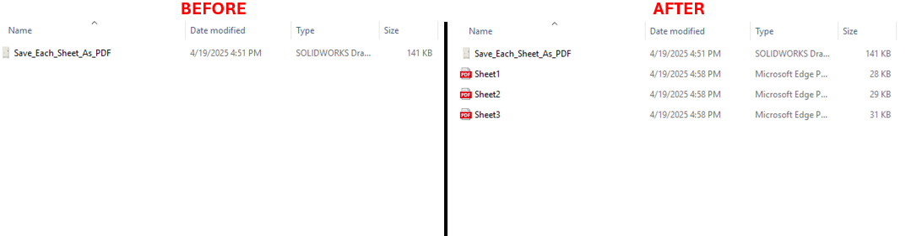

Export Sheets to PDF Automatically
Description
This VBA macro automates the process of exporting all sheets in a SOLIDWORKS drawing to individual PDF files. The macro loops through all the sheets in the active drawing and exports each one as a PDFs into the folder that the drawing file is in.
System Requirements
- SOLIDWORKS Version: SOLIDWORKS 2018 or later
- VBA Environment: Pre-installed with SOLIDWORKS (Access via Tools > Macro > New or Edit)
- Operating System: Windows 7, 8, 10, or later
VBA Code:
Option Explicit
' DISCLAIMER:
' This macro is provided "as is" without any warranty. Blue Byte Systems Inc. is not liable for any issues that arise
' from its use. Always test the macro in a safe environment before applying it to production data.
Dim swApp As SldWorks.SldWorks
Sub ExportSheetsToPDF()
' Set the SOLIDWORKS application object
Set swApp = Application.SldWorks
' Check if SOLIDWORKS is running
If swApp Is Nothing Then
MsgBox "Error Connecting to SOLIDWORKS. Please Try Again.", vbCritical
Exit Sub
End If
' Set the active document object
Dim swDoc As ModelDoc2
Set swDoc = swApp.ActiveDoc
' Check if the active document is valid
If swDoc Is Nothing Then
MsgBox "Unable to Connect to a Valid SOLIDWORKS Drawing.", vbCritical
Exit Sub
End If
' Ensure the active document is a drawing
If swDoc.GetType <> SwConst.swDocumentTypes_e.swDocDRAWING Then
MsgBox "The active document is not a SOLIDWORKS drawing.", vbCritical
Exit Sub
End If
' Set the drawing document object
Dim swDwgDoc As DrawingDoc
Set swDwgDoc = swDoc
' Set the PDF export data object
Dim swExportPdfData As SldWorks.ExportPdfData
Set swExportPdfData = swApp.GetExportFileData(SwConst.swExportDataFileType_e.swExportPdfData)
' Get the output directory from the drawing's path
Dim outputPath As String
outputPath = GetFolderFromPath(swDoc.GetPathName)
' Get the list of sheet names in the drawing
Dim sheetNames As Variant
sheetNames = swDwgDoc.GetSheetNames
' Set the current sheet object
Dim swSheet As Sheet
Set swSheet = swDwgDoc.GetCurrentSheet
' Generate the base output file name
Dim outputFileName As String
outputFileName = GetFileNameFromTitle(swDoc.GetTitle, swSheet.GetName)
' Initialize variables for error handling
Dim lErrors As Long
Dim lWarnings As Long
Dim i As Integer
Dim exportSuccess As Boolean
' Display the export status in the SOLIDWORKS status bar
Dim statusBarPane As StatusBarPane
Dim swFrame As SldWorks.Frame
Set swFrame = swApp.Frame
Set statusBarPane = swFrame.GetStatusBarPane
statusBarPane.Visible = True
' Loop through each sheet and export to PDF
For i = 0 To UBound(sheetNames)
' Update the status bar with the current sheet being exported
statusBarPane.Text = "Exporting sheet: " & sheetNames(i)
' Set the current sheet for PDF export
exportSuccess = swExportPdfData.SetSheets(SwConst.swExportDataSheetsToExport_e.swExportData_ExportSpecifiedSheets, sheetNames(i))
' Check for errors in setting the sheet
If Not exportSuccess Then
MsgBox "Error exporting sheet: " & Str(i), vbCritical
Exit Sub
End If
' Export the current sheet as PDF
exportSuccess = swDoc.Extension.SaveAs(sheetNames(i) & ".pdf", SwConst.swSaveAsVersion_e.swSaveAsCurrentVersion, _
SwConst.swSaveAsOptions_e.swSaveAsOptions_Silent, swExportPdfData, lErrors, lWarnings)
' Check for errors during the export
If Not exportSuccess Then
MsgBox "Error exporting sheet: " & Str(i), vbCritical
HandleErrors lErrors
Exit Sub
End If
Next i
End Sub
' Function to get the folder path from the full file path
Private Function GetFolderFromPath(fullPath As String) As String
GetFolderFromPath = Left(fullPath, InStrRev(fullPath, "\"))
End Function
' Function to get the file name without the sheet name
Private Function GetFileNameFromTitle(fullTitle As String, sheetName As String) As String
GetFileNameFromTitle = Left(fullTitle, InStrRev(fullTitle, sheetName) - 1)
End Function
' Sub to handle errors based on error codes
Private Sub HandleErrors(errorCode As Long)
Select Case errorCode
Case SwConst.swFileSaveError_e.swGenericSaveError
MsgBox "File Saving Error", vbExclamation
Case SwConst.swFileSaveError_e.swReadOnlySaveError
MsgBox "File Saving Error: Read-Only Rights", vbExclamation
Case SwConst.swFileSaveError_e.swFileNameEmpty
MsgBox "File Saving Error: Empty Filename", vbExclamation
Case SwConst.swFileSaveError_e.swFileNameContainsAtSign
MsgBox "File Saving Error: Invalid FileName Character", vbExclamation
Case SwConst.swFileSaveError_e.swFileSaveFormatNotAvailable
MsgBox "File Saving Error: Invalid File Format", vbExclamation
Case SwConst.swFileSaveError_e.swFileSaveAsNameExceedsMaxPathLength
MsgBox "File Saving Error: Filename Exceeds Maximum Path Length", vbExclamation
End Select
End Sub
Macro
You can download the macro from here
Customization
Need to modify the macro to meet specific requirements or integrate it with other processes? We provide custom macro development tailored to your needs. Contact us.